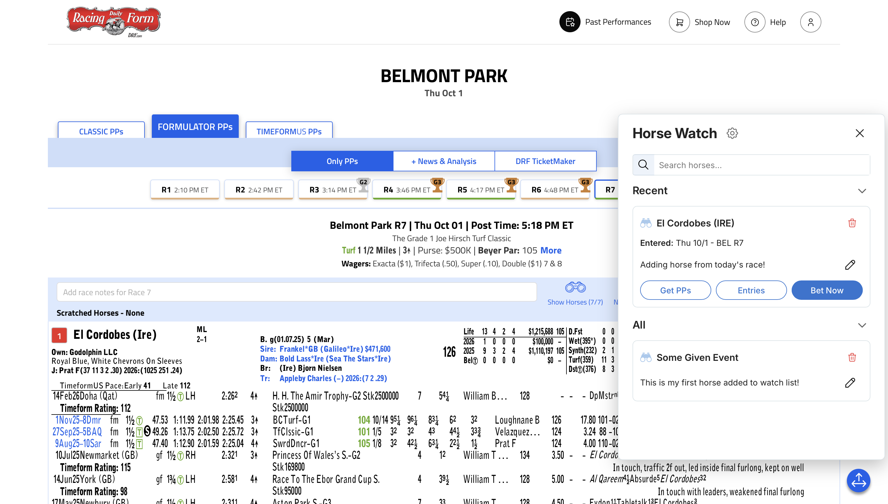
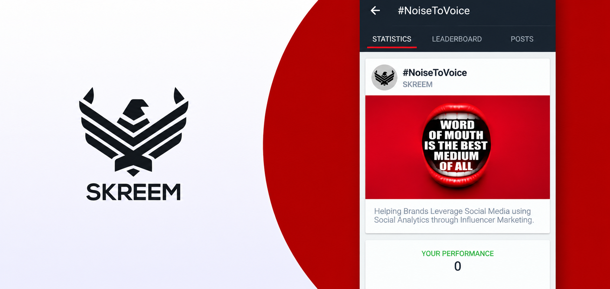
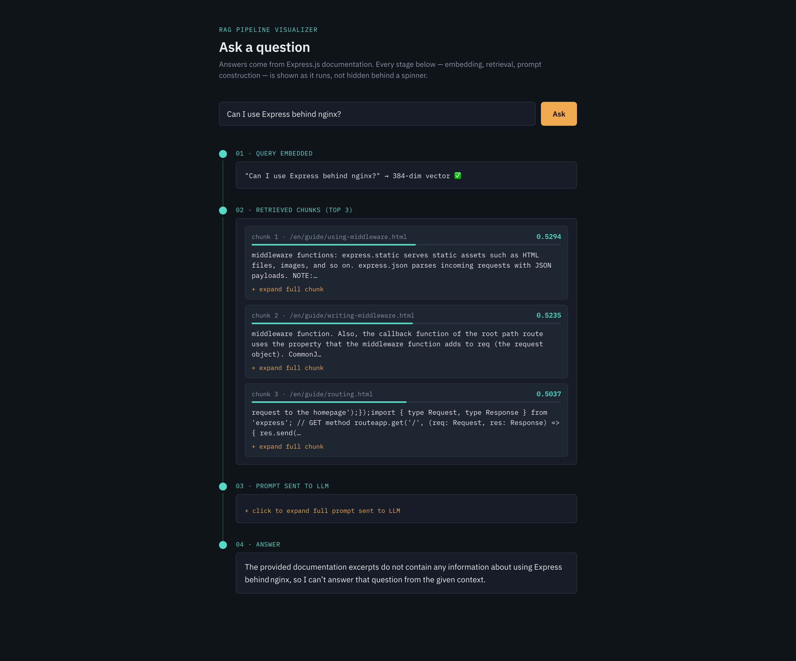
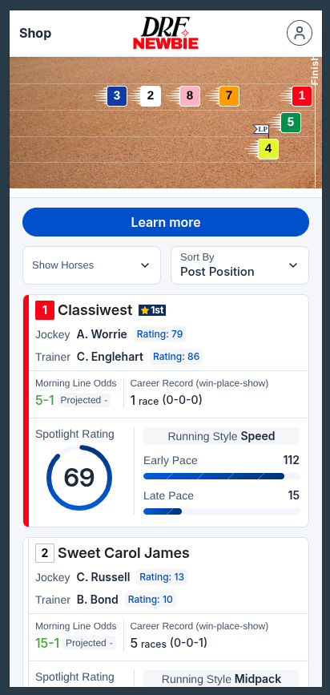

AI Integration / Prompt Engineering
Built AI-powered applications by integrating LLMs into React Native and NestJS, leveraging prompt engineering for intelligent image analysis.
Senior Software Engineer
Full-stack engineer with 8 years building production web platforms. Architected Horse Watch, a micro-frontend widget used by ~100K monthly users across Daily Racing Form's apps, and architected Newbie, which brought ~10K sign-ups during Breeders' Cup 2025. Led a team of 7 engineers.
Built AI-powered applications by integrating LLMs into React Native and NestJS, leveraging prompt engineering for intelligent image analysis.
Built scalable frontend and backend applications using modern ES6+ features, TypeScript, and asynchronous programming patterns.
Designed scalable backend services, REST APIs, authentication flows, and layered architectures for production applications.
Developed performant web and mobile applications with reusable components, modern React patterns, and responsive user experiences.
Designed scalable data models, optimized queries, and implemented efficient data access patterns for production systems.
Worked with AWS services including S3, ECS, ECR, and IAM for cloud storage, containerized deployments, and application hosting.
Implemented caching strategies and background job processing to improve application performance, scalability, and asynchronous task execution.

Cross-app micro-frontend widget for Daily Racing Form. ~70K of ~100K monthly users opened it
in month one.
View live
*Company project: Haptiq

Brand and influencer collaboration portal. ~50K influencers, ~3K brands. No longer
live.
*Company project: Skreem

Self-directed RAG pipeline over the Express.js docs that exposes every stage. Read the write-up

Satellite web app that brings a younger audience into DRF. ~10K sign-ups during Breeders' Cup
2025.
View
live
*Company project: Haptiq